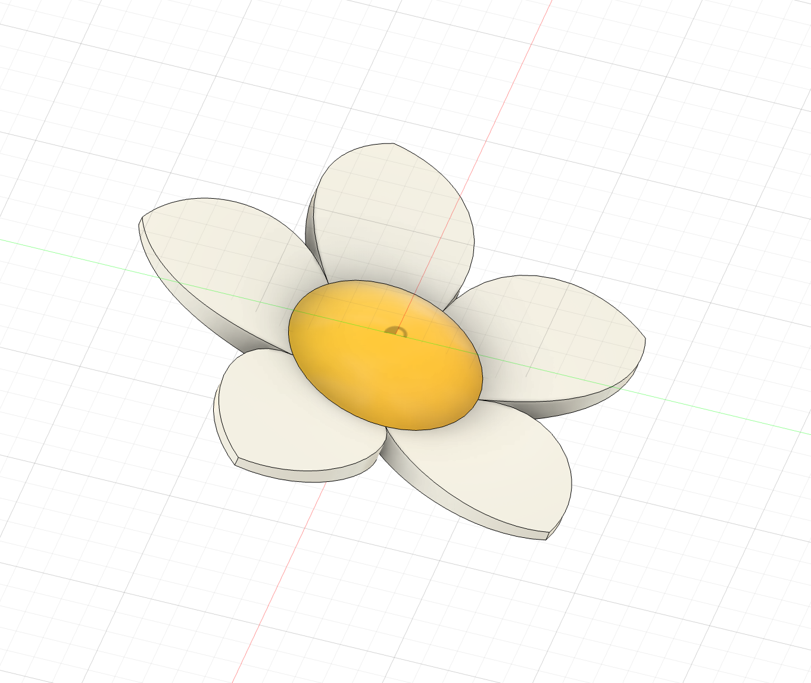
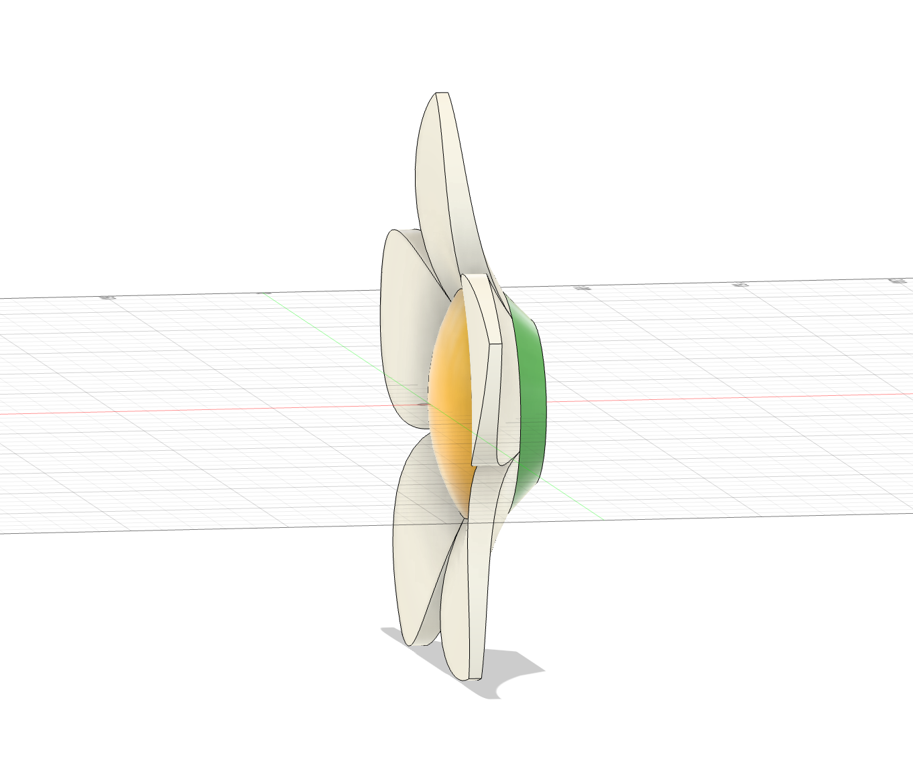
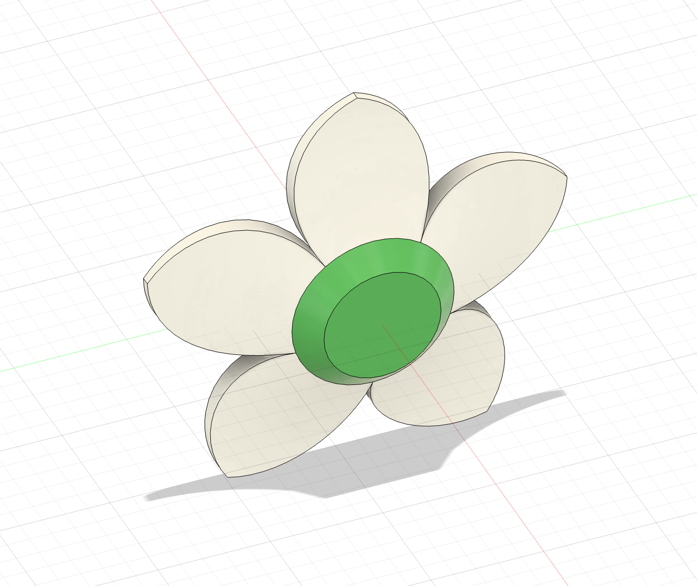
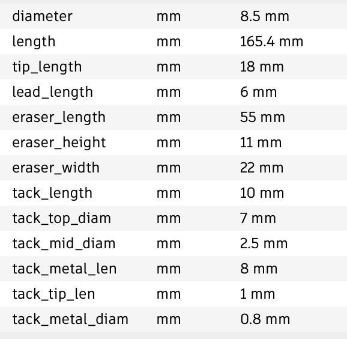
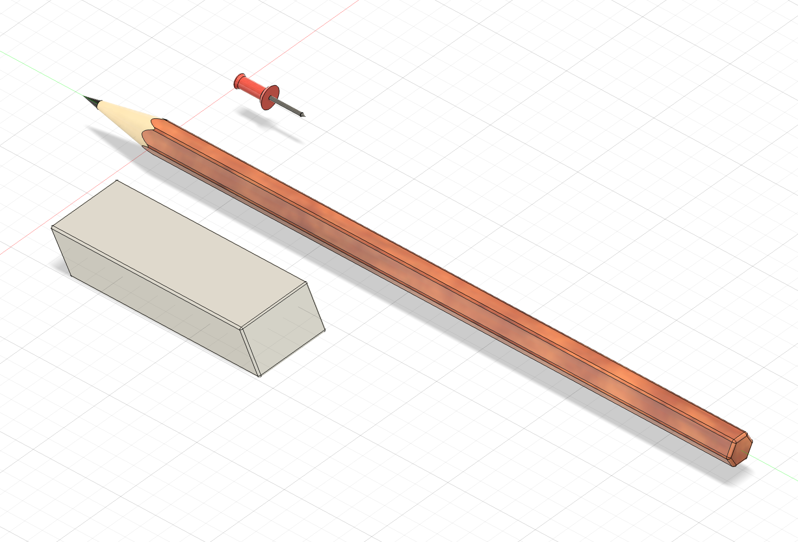
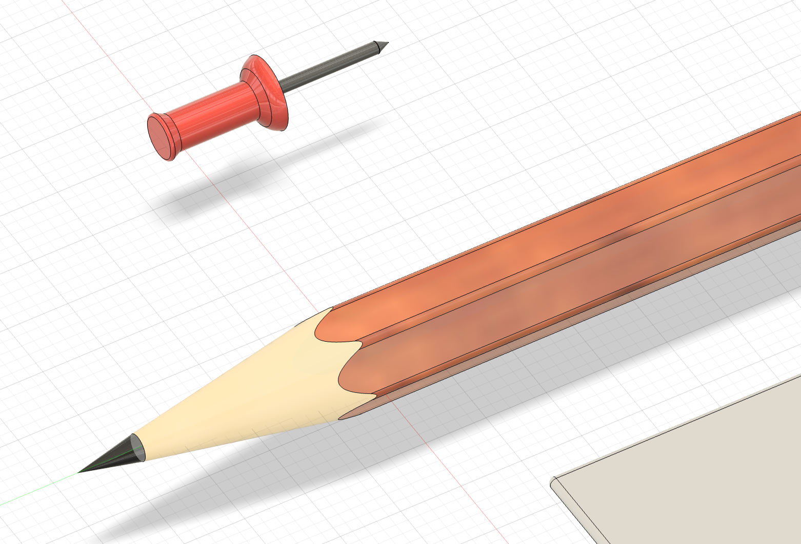

week 2: 2D design & cutting
assignment 1: make a box
the goal of this assignment is to get familiar with fusion 360 and how to use it to create a 2D design. i created a box with teeth to connect the sides. after modeling the structure and laser cutting it to ensure the dimensions were correct, i added some more details. i added many little cutouts onto the sides and also my name on the front. below is my final design.initial box designs
final box designs


assignment 2: fusion 360 tutorial
for this assignment, i chose to follow this flower tutorial, since my final project will probably incorporate flowers of some sort.



assignment 3: fusion modeling
for this assignment, i created an assembly of stationery in fusion 360. i made a pencil, an eraser, and a thumbtack. some techniques i practiced were extrude and fillet. i also colored these parts to be more realistic. i used the below parameters:

here are photos of my final assembly:

